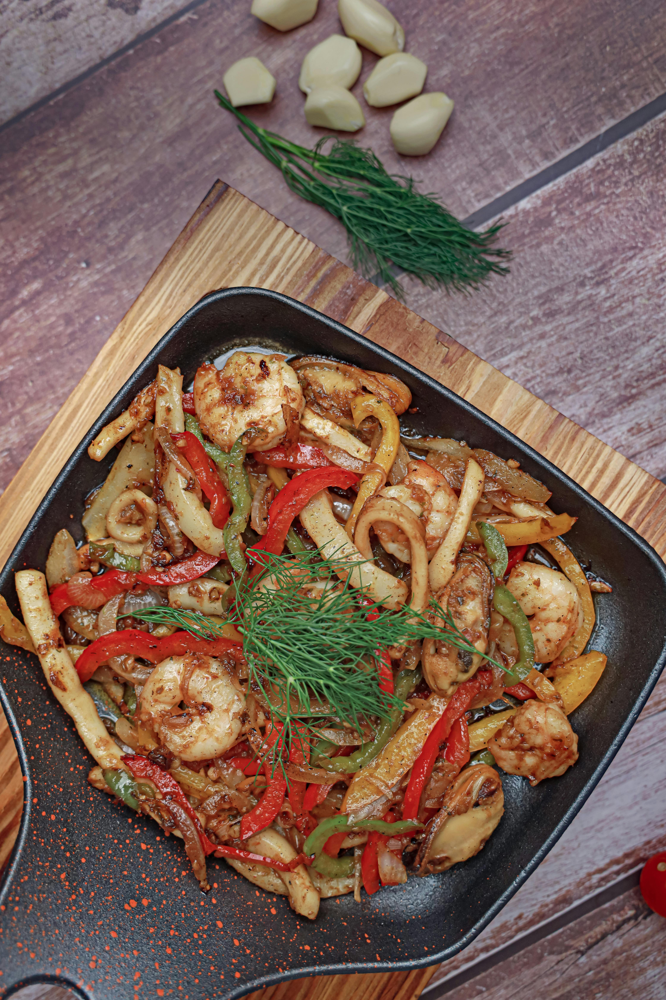

Main Page
Garlic Broccoli Shrimp Stir Fry

Garlic Broccoil Shrimp Stir Fry Recipe
Get your greens with this garlicky broccoli shrimp stir-fry! Tender shrimp crisp broccoli is stir-fried with aromatic garlic and ginger for a dish that's both healthy and flavorful.
Ingredients
- 1 lb large shrimp, peeled and deveined
- 3 cloves garlic, minced
- 2 cups broccoli floret
- ½ onion, diced
- 1 tablespoon low sodium soy sauce
- 2 tablespoons sesame oil, divided
- ½ teaspoon salt, divided
Steps
- Heat 1 tablespoon of sesame oil in a large, nonstick skillet over medium heat.
- Pour in the shrimp and season with ¼ teaspoon of the salt.
- Fry the shrimp for 1 minute on each side.
- Remove the shrimp from the pan and pour in the remaining 1 tablespoon of oil.
- Toss in the onion and remaining ¼ teaspoon of salt and sauté for a few minutes until they begin to soften.
- Add in the broccoli, garlic and soy sauce and sauté until the garlic is fragrant, about 30 seconds.
- Toss the shrimp back into the pan and mix until everything is well incorporated and the shrimp is fully cooked, about 1 minute.
- Divide the mixture evenly between 4 bowls.
- Enjoy!